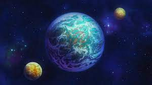

Planet Vegeta
Home of the Saiyans

Planet Vegeta (惑わく星せいベジータ Wakusei Bejīta), formerly known as Planet Plant (惑わく星せいプラント Wakusei Puranto), is the home planet of Goku, Vegeta, and all other native Saiyans, Tuffles and the Inhabitants of Plant in the Dragon Ball franchise.
It is known to possess at least ten times[3] the gravity of planet Earth (whether this means that Planet Vegeta is a physically larger world, merely a denser one, or both, is not explained). This intense gravity gives the Saiyans their natural physical resiliency and power. The Tuffles, the other race on Planet Vegeta, appear to have evolved along different lines by having smaller bodies so that the gravity affects them less.[4]
Planet Vegeta during Frieza's reign
In the anime, Planet Vegeta appears to be a harsh desert world with a yellow/red sky instead of blue. It has at least two natural satellites, and there is a full moon every 100 years or 8 years (depending on the dub).
Planet Vegeta seemed to be in ruins about 100 years before Vegeta and Nappa land on Earth.